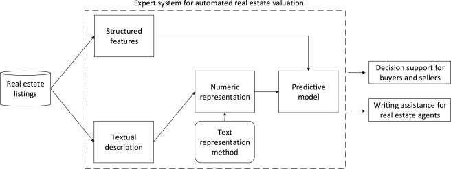
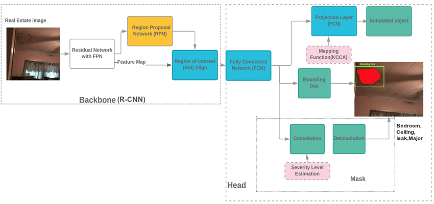
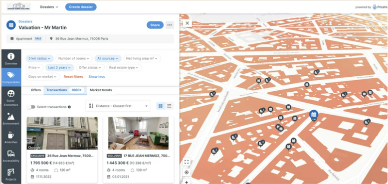

About Automated Valuation Models (AVMs)
AVMs have become increasingly prevalent in the real estate market. By leveraging vast amounts of property transaction data and machine learning techniques, AVMs can quickly and objectively estimate property values, significantly enhancing the efficiency of real estate transactions. However, traditional AVM models primarily rely on structured data, such as property size, age, and location, leaving untapped information in unstructured textual data, like property descriptions and neighborhood characteristics.
NLP & CNN in AVMS
AVMs
Natural Language Processing (NLP)
Techniques like Word Embeddings and BERT.
- Extract valuable information: Extract key insights from textual property descriptions.
- Enhance valuation models: Improve the accuracy of real estate valuation models.
- Consider contextual factors: Account for neighborhood quality, renovation details, and other relevant factors.
Convolutional Neural Networks (CNNs)
Comprises a backbone network and a head network.
- Backbone Network : Leverages Faster R-CNN and ResNet for feature extraction and region proposal generation.
- Head Network：Performs object classification, bounding box regression, and instance segmentation.
NLP in Real Estate
Insights into NLP technologies applied in real estate valuation.
Figure: Integration of NLP into real estate valuation.
Mask R-CNN
Explains the role of Mask R-CNN in property evaluation and damage assessment.
How Mask R-CNN Recognizes the Property Image
Figure: System network architecture showing how Mask R-CNN detects and categorizes property damages.
Case leveraging NLP : PriceHubble
PriceHubble AG is a Swiss real estate data solutions provider dedicated to developing data-driven and machine learning-based real estate products. By leveraging big data, AI, and other technologies, it offers users a variety of data services, including property valuation and market analysis. Through a partnership with PriceHubble, WealthPark integrates valuation services into its app, allowing users to conveniently view real-time valuations of their owned properties. The estimated prices are calculated based on big data (such as publicly available real estate information and various surrounding details) and AI evaluation models developed by PriceHubble. These prices fluctuate depending on the real estate market’s listed sale conditions and market trends. Furthermore, the estimated prices and rents are determined using information such as the location, living area, and year of construction of the owned property. It is important to note that specific property characteristics, such as interior decoration, renovations, and the orientation of the residence, are not included in the calculation. Additionally, the estimated prices and rents are based on the current market environment. Since market conditions are subject to change, the estimated values may differ from rents agreed upon a few years ago or the price at which the property was purchased.
Conclusion and Challenges
Combining textual and visual data improves predictive accuracy.
Mask R-CNN enables precise assessment of physical conditions.
Textual features add context, especially when numerical data is limited.
Integrating diverse data sources creates comprehensive evaluation systems.
Machine learning and AI enhance decision-making processes in real-world applications.
References
- Deep Learning for Real Estate Trading | IEEE Conference Publication
- AI in real estate: Use cases, technologies, implementation and development
- PriceHubble AI 智能估價功能
- Automated real estate valuation with machine learning models using property descriptions (房價預測)
- (PDF) Image-Based Appraisal for Real Estate Using Mask Region Convolutional Networks (圖片辨識估價)